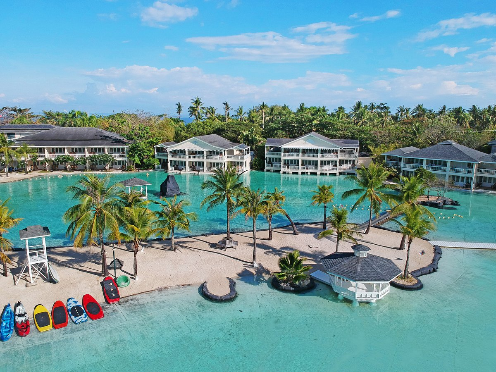
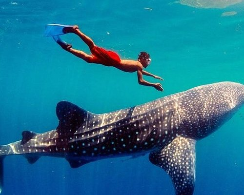
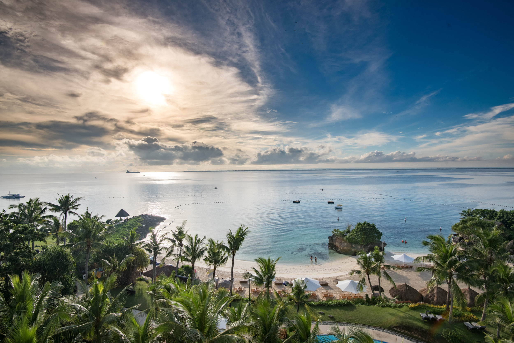
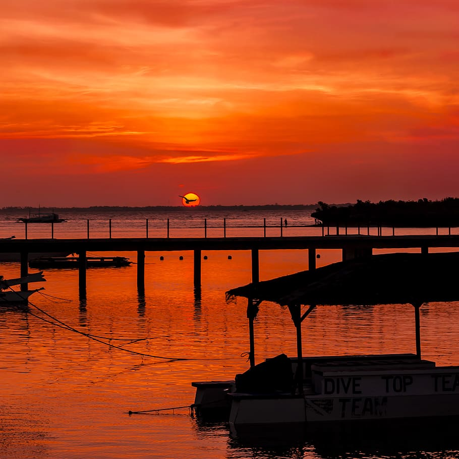
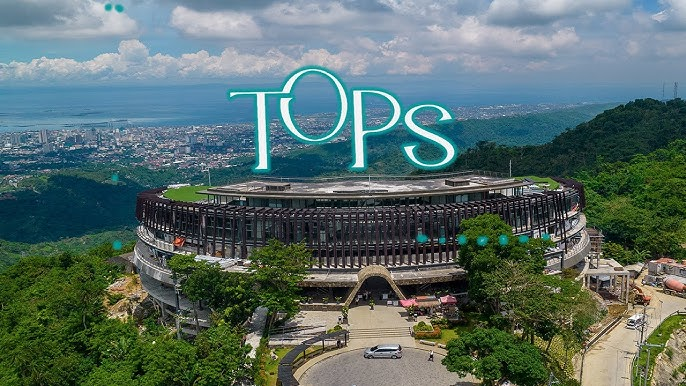

Cebu is rich in culture and history, with its beautiful beaches and historical landmarks. It offers a unique blend of relaxation and adventure.
Cebu is a top destination in the Philippines for its stunning beaches, rich history, and vibrant culture. With beautiful white-sand beaches in places like Mactan, Malapascua, and Bantayan, it's a paradise for beach lovers and water sports enthusiasts.
The island also holds significant historical landmarks, such as Magellan’s Cross, Fort San Pedro, and the Basilica Minore del Santo Niño, marking Cebu’s role as the first Spanish settlement in the country.
Cebu is famous for its delicious food, particularly lechon, along with fresh seafood and local delicacies.
For nature and adventure seekers, Cebu offers breathtaking sights like the Kawasan Falls, Osmeña Peak, and the opportunity to swim with whale sharks in Oslob.
The Sinulog Festival, a grand celebration of Cebu’s culture, showcases the island’s vibrant spirit through street dancing and colorful parades.
Conveniently accessible by air, sea, and land, Cebu is a gateway to exploring other islands in the Visayas, making it an ideal travel destination for anyone looking to experience a mix of history, nature, and local flavor.
The best time to visit Cebu is from December to May, when the weather is perfect for beach activities and outdoor exploration.




